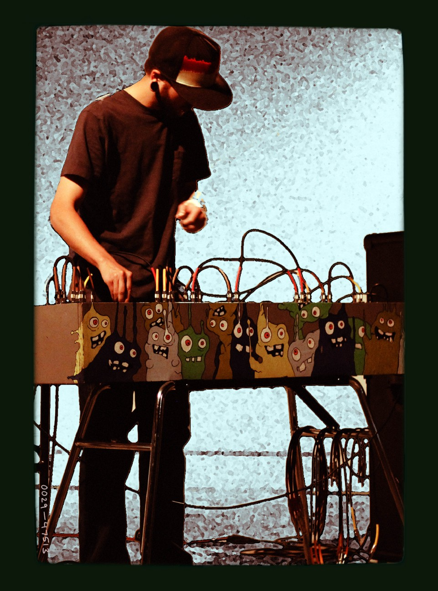

I'm a composer and programmer in Kansas City.
I got my first bass guitar in 1996. Then formed bands, cut records, and toured the US a few times. I earned a B.M. and wrote music that was featured at the Society of Composer's national conference. After college, I recorded music for seven years, everything from the Avett Bros to Gillie Da Kid.
I started burning-out on recording and became obsessed with programming. These days I'm working as a consultant, bringing modern web technologies to enterprise applications. I'm most interested in node, functional programming, build scripts, linux and open-source.
